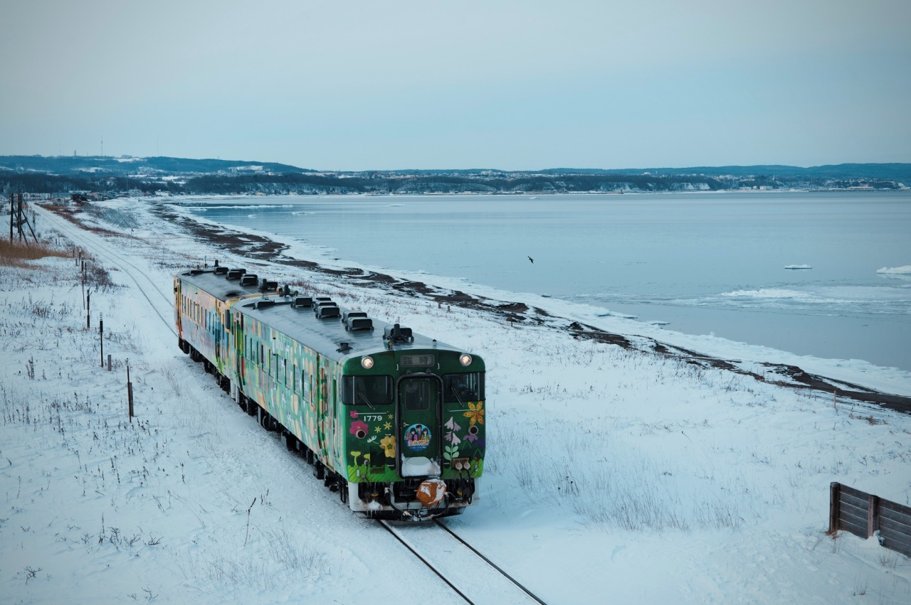
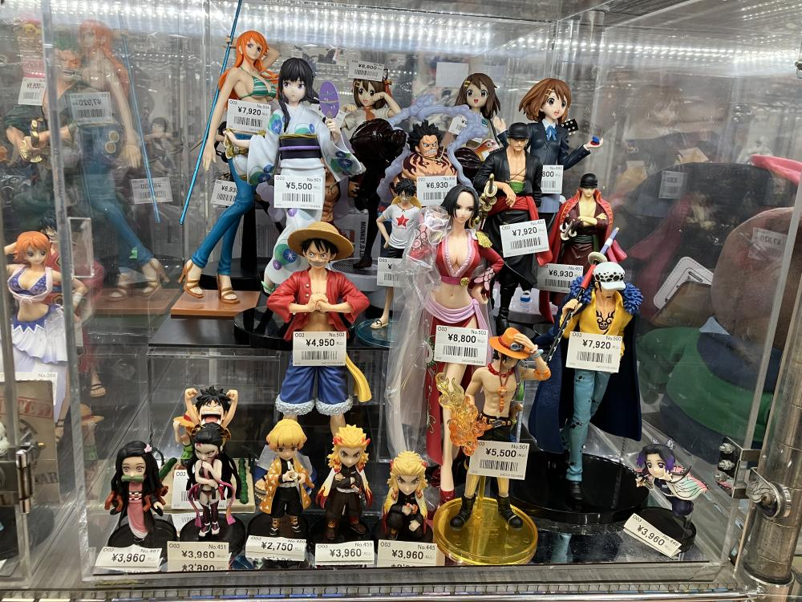
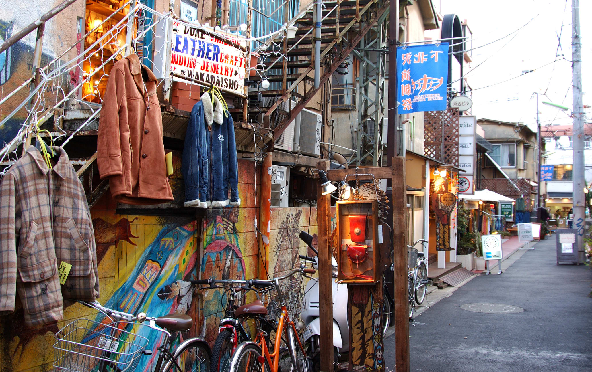
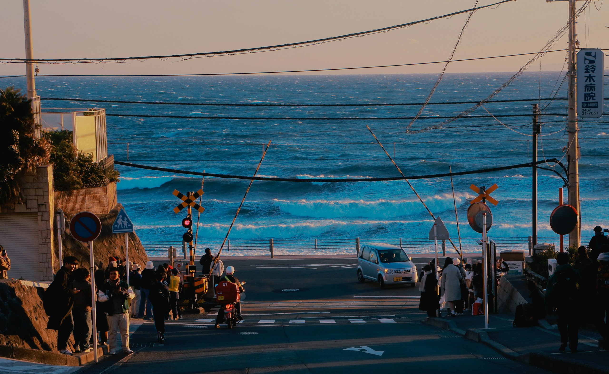

Honne
What we really feel.
Beyond the screen.


01 / JAPANESE POP CULTURE
Stories we love.
A world we share.
Adventure, romance, fantasy
and everyday life.
Cosplay, fan art
and shared collections.
Events, character shops
and real-life locations.
02 / FROM THE SCREEN TO REAL LIFE
HOKKAIDO, JAPANBlue skies. A train by the sea.
The kind of Japan I want to get lost in.
Snowfall. Warm lights.
A winter evening in Yamagata.

A little less rush.
A little more wonder.
BIEI / ON MY TRAVEL WISH LIST
03 / CITY LIFE
SHIBUYA, TOKYOOne city. So many moods.
Find the rhythm that feels like you.
City lights & street style.

Anime, games & character shops.

Cafés, vintage finds & live music.
Which Tokyo
is your Tokyo?

04 / PEOPLE & CONNECTION
Places draw us in.
People give the journey meaning.
What we really feel.
How we express ourselves
in public.
People and situations differ.
These ideas are not a rule about every Japanese person.
Let friendship take time.
See you beyond the screen.